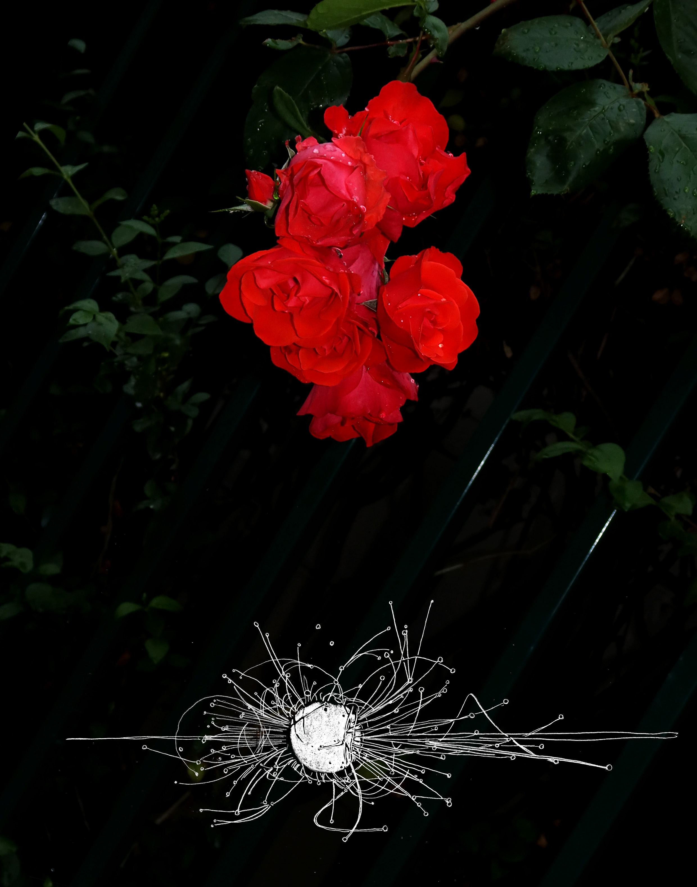

Tasio Bidegain is an interdisciplinary visual artist, currently living and working in Amsterdam.
He was born in 1996 in Menorca and grew up in Paris. Here he started to autonomously develop several independent artistic practices, such as painting, drawing, video or photography as a quotidian way to react and reflect on his surroundings. This year he graduated from the Gerrit Rietveld Academie.
From a curiosity and eagerness for complexity in visual language, he specialised in photography while continuously learning as many analogue and digital techniques of imagemaking as possible. These range from printmaking (lithography, etching, and so on) to video installation, ceramics, and textile printing.
He now works on merging these practices together into crafted images that carry complex narratives. Trying to create new visual ways of describing the intricate facets of reality is at the centre of his practice, in a personal attempt to synthesise and fixate in time, or capture, his experience of our chaotic world.
Bidegain's work process is both material and research-based, graphically communicating ideas while leaving space for subjective interpretations to arise. Mixing mediums such as photography and drawing, he aims to blur the lines between fiction and truth, virtual and material elements as well as building alternative realities in his images.
Over the last years, his practices has been converging into the creation of ever larger and drawn-out projects, manifesting his research as large-scale hand-carved photographs, editorial projects, and drawing installations. In so doing shaping and developing his very own pictorial techniques and visual language.
Send an e-mail, or have a look on Instagram.
Paris Syndrome
is a photographic publication made during the corona crisis in 2020. 220 pages. Edition of 15.

Cover of Paris Syndrome, self-published, 2020.
First appearance at the Graduation Show of the Gerrit Rietveld Academie. Amsterdam, 2020.
 Poster made on the occasion of its release.
Shown at FOAM Museum, Gallerie Caroline O’Breen, Gallerie Ron Mandos, Het HEM, Arti et Amicitiae, Gerrit Rietveld Academie.
Poster made on the occasion of its release.
Shown at FOAM Museum, Gallerie Caroline O’Breen, Gallerie Ron Mandos, Het HEM, Arti et Amicitiae, Gerrit Rietveld Academie.
Paris syndrome is a condition exhibited by some individuals when visiting or going on vacation to Paris, as a result of extreme shock at discovering that Paris is not as beautiful as they expected.
The disorder is caused by positive representations of the city in popular culture, which leads to immense disappointment as the reality of experiencing the city is very different from expectations: tourists are confronted with an overcrowded and littered city.
Paris syndrome is the physical shock felt when virtual images appear as being more real than reality itself.
Chained to the rhythm of the images we consume, we watch them go viral and disappear day after day, unable to look back and reflect, trapped in an eternal present. Screenshots of riots, adds for face-masks, media footage covering the pandemic, classical paintings, and landscapes of cities in ruins are amongst the images that I encountered and drew during this worldwide lockdown.
By assembling these elements of our reality to construct a series of drawings, I aimed at making sense of this turmoil of images, enlightening its dystopian accents and manifesting the tension between real and fake, virtual and material images.
The surgical sharpness of the drawings, mimicking the cold, systematic, and unsparing tone of the information cycle, contrasts with the enchanted reality of the pictures, weaving a constellation of modern narratives.
In those “confined” photographs, taken in empty streets or inside the monotony of an apartment, the banality of our routine, trash, flowers, or buildings suddenly reveals an appealing and chimerical glow.
Corners of My Room
is a hand-carved photographic tryptich, depicting the interior of a room.
 Corners of My Room, etching and chemicals on photographic print, 183 × 283 cm.
Corners of My Room, etching and chemicals on photographic print, 183 × 283 cm.
 Context shot of the work at Museum Belvedere. Heerenveen, 2020.
Shown at Museum Belvedere and Punt WG.
Context shot of the work at Museum Belvedere. Heerenveen, 2020.
Shown at Museum Belvedere and Punt WG.
More specifically, it envisions the room where the artist constructed this image, between December 2019 and January 2020.
During this time, the room was not only inhabited by objects, him or his loved ones, but by an abundance of images.
The three main panels of the piece stand as the three walls of a room one can observe while being in it. Altogether, they form a single image in which reading radically differs from the classical dichotomy of triptychs; here, hell and heaven coexist in a familiar yet dream-like vision of our reality.
The first layer is the photographic print, for which the artist gathered and assembled the objects existing in the room: food, screens, souvenirs, money, and flowers from modern still lives, befitting the ephemerality and fetishism of overconsumption.
The digital pictures are printed on glossy paper and mounted on aluminum, regaining the physical rigidity of a wall showing the lustre and reflective qualities of a screen.
Based on the numbers phi (φ) and pi (π) that are constants in both nature and culture, complex geometrical structures weave through the image. These structures serve as the scaffolding for the hand-carved graphic interventions finally made on the prints.
The photographs are carved with a mix of sharp tools and chemicals, drawing out imagery as the photographic paper is eroded, unveiling the subtext of the photographies, their unconscious, and hidden meanings. All the images drawn existed in the room, they were all carefully placed on the image, following the structure, for their symbolic and narrative capacities, to create new visuals associations.
Webdesign by Helmer Stuyt © 2020